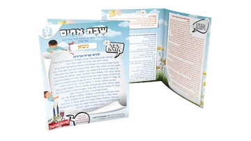

דלגו לתוכן הראשי

לבתי הספר
הכול לעלון של
בית הספר,
במקום אחד
בוחרים מדורים, שולחים תכנים ומבקשים תיקונים. בחרו מה אתם צריכים עכשיו.
בחירת מדורים
רואים דוגמה לכל מדור ובוחרים מה יופיע בעלון שלכם.
לבחירת המדורים
שליחת תכנים לעלון
שולחים טקסט ותמונות מבית הספר, והם נכנסים לעלון.
לשליחת התכנים
תיקון בעלון
משנים מילה, משפט או תמונה בעלון שכבר קיבלתם.
לבקשת תיקון